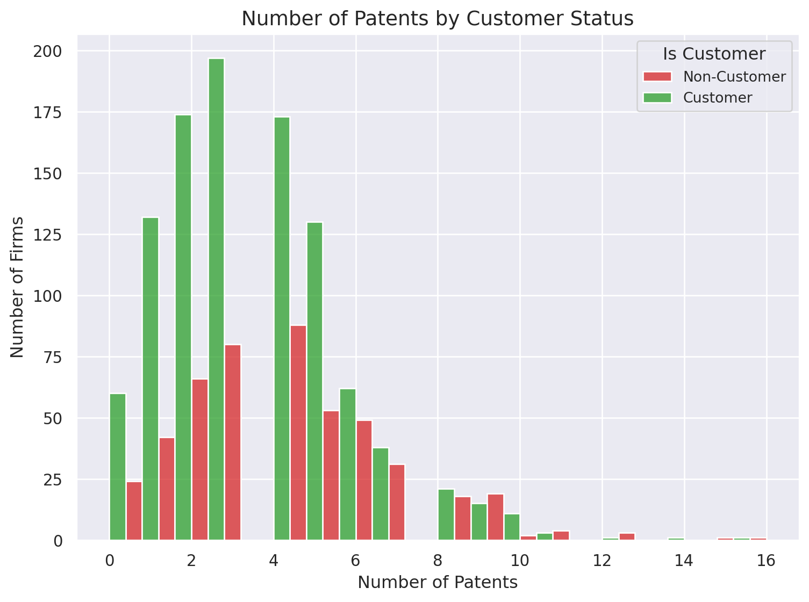

Blueprinty is a small firm that makes software for developing blueprints specifically for submitting patent applications to the US patent office. Their marketing team would like to make the claim that patent applicants using Blueprinty’s software are more successful in getting their patent applications approved. Ideal data to study such an effect might include the success rate of patent applications before using Blueprinty’s software and after using it. Unfortunately, such data is not available.
However, Blueprinty has collected data on 1,500 mature (non-startup) engineering firms. The data include each firm’s number of patents awarded over the last 5 years, regional location, age since incorporation, and whether or not the firm uses Blueprinty’s software. The marketing team would like to use this data to make the claim that firms using Blueprinty’s software are more successful in getting their patent applications approved.
Data
import pandas as pdimport seaborn as sns# Load the Blueprinty datadata = pd.read_csv('/home/jovyan/Desktop/marketingwebsite/blueprinty.csv')# Display the first few rows of the datasetdata.head()
patents
region
age
iscustomer
0
0
Midwest
32.5
0
1
3
Southwest
37.5
0
2
4
Northwest
27.0
1
3
3
Northeast
24.5
0
4
3
Southwest
37.0
0
import matplotlib.pyplot as pltimport seaborn as snssns.set(style="whitegrid")plt.figure(figsize=(8, 6))sns.histplot(data=data, x="patents", hue="iscustomer", bins=20, multiple="dodge")plt.title("Number of Patents by Customer Status")plt.xlabel("Number of Patents")plt.ylabel("Number of Firms")plt.legend(title="Is Customer", labels=["Non-Customer", "Customer"])plt.show()

# Filter data into customers and non-customerscustomers = data[data['iscustomer'] ==1]non_customers = data[data['iscustomer'] ==0]# Calculate and print meansmean_customers = customers['patents'].mean()mean_non_customers = non_customers['patents'].mean()print(f"Mean number of patents for customers: {mean_customers}")print(f"Mean number of patents for non-customers: {mean_non_customers}")
Mean number of patents for customers: 4.133056133056133
Mean number of patents for non-customers: 3.4730127576054954
Observations:
Companies that use Blueprinty typically hold a higher average number of patents (around 4.13) compared to those that don’t (approximately 3.47). The histogram reveals that customer firms are more frequently found among those with greater patent counts, hinting at a possible positive link between Blueprinty usage and patent performance. Nevertheless, this trend could also be shaped by additional variables like geographic location or the age of the firm, which warrant further investigation.
Blueprinty customers are not selected at random. It may be important to account for systematic differences in the age and regional location of customers vs non-customers.
import seaborn as snsimport matplotlib.pyplot as pltpalette = {0: "#4C72B0", 1: "#DD8452"}plt.figure(figsize=(8, 6))sns.countplot(data=data, x="region", hue="iscustomer", palette=palette)plt.title("Region Distribution by Customer Status")plt.xlabel("Region")plt.ylabel("Number of Firms")plt.legend(title="Is Customer", labels=["Non-Customer", "Customer"])plt.tight_layout()plt.show()
# Compare regions by customer statusregion_counts_customers = customers['region'].value_counts(normalize=True)region_counts_non_customers = non_customers['region'].value_counts(normalize=True)print("Region distribution for customers:")print(region_counts_customers)print("\nRegion distribution for non-customers:")print(region_counts_non_customers)# Compare ages by customer statusmean_age_customers = customers['age'].mean()mean_age_non_customers = non_customers['age'].mean()print(f"\nMean age for customers: {mean_age_customers}")print(f"Mean age for non-customers: {mean_age_non_customers}")
Region distribution for customers:
region
Northeast 0.681913
Southwest 0.108108
Midwest 0.076923
South 0.072765
Northwest 0.060291
Name: proportion, dtype: float64
Region distribution for non-customers:
region
Northeast 0.267910
Southwest 0.240432
Midwest 0.183513
Northwest 0.155054
South 0.153091
Name: proportion, dtype: float64
Mean age for customers: 26.9002079002079
Mean age for non-customers: 26.101570166830225
The geographic distribution of firms differs between Blueprinty customers and non-customers, with certain regions—such as the Northeast—showing a greater proportion of customer firms. This indicates that regional factors could potentially confound the observed relationship between software adoption and patent performance.
In terms of firm age, customers tend to be slightly older on average (approximately 26.9 years) compared to non-customers (about 26.1 years), though the difference is relatively small. Nonetheless, accounting for firm age remains important to ensure the analysis yields unbiased insights.
Estimation of Simple Poisson Model
Since our outcome variable of interest can only be small integer values per a set unit of time, we can use a Poisson density to model the number of patents awarded to each engineering firm over the last 5 years. We start by estimating a simple Poisson model via Maximum Likelihood.
# Define the Poisson likelihood functionimport numpy as npdef poisson_likelihood(lambda_, Y):""" Compute the Poisson likelihood for given lambda and observed Y. """ likelihood = np.exp(-lambda_) * (lambda_ ** Y) / np.math.factorial(Y)return likelihood# Example usageY_observed =5# Example observed number of patentslambda_example =3.0# Example lambda valuelikelihood_value = poisson_likelihood(lambda_example, Y_observed)print(f"Poisson likelihood for Y={Y_observed} and lambda={lambda_example}: {likelihood_value}")
Poisson likelihood for Y=5 and lambda=3.0: 0.10081881344492448
/tmp/ipykernel_60460/637518867.py:8: DeprecationWarning:
`np.math` is a deprecated alias for the standard library `math` module (Deprecated Numpy 1.25). Replace usages of `np.math` with `math`
def poisson_loglikelihood(lambda_, Y):""" Compute the Poisson log-likelihood for given lambda and observed Y. """from scipy.special import factorial log_likelihood = np.sum(Y * np.log(lambda_) - lambda_ - np.log(factorial(Y)))return log_likelihood
# Define a range of lambda valueslambda_values = np.linspace(0.1, 10, 100)# Convert Y_sample to a NumPy arrayY_sample = np.array([5, 3, 4, 6, 2]) # Example observed data# Compute the log-likelihood for each lambdalog_likelihoods = [poisson_loglikelihood(l, Y_sample) for l in lambda_values]# Plot the log-likelihoodplt.plot(lambda_values, log_likelihoods, label='Log-Likelihood')plt.xlabel('Lambda')plt.ylabel('Log-Likelihood')plt.title('Log-Likelihood vs Lambda')plt.axvline(x=np.mean(Y_sample), color='red', linestyle='--', label='MLE (Mean of Y)')plt.legend()plt.show()
# Derive the first derivative of the log-likelihood function# Log-likelihood: l(lambda) = Y * log(lambda) - lambda - log(Y!)# First derivative: dl/dlambda = Y / lambda - 1# Solve for lambda when dl/dlambda = 0# Y / lambda - 1 = 0 => lambda = Y# For a sample of observations, the MLE for lambda is the sample mean (Ybar)def compute_lambda_mle(Y):""" Compute the MLE for lambda (mean of Y). """return np.mean(Y)# Example usageY_sample = [5, 3, 4, 6, 2] # Example observed datalambda_mle = compute_lambda_mle(Y_sample)print(f"MLE for lambda (mean of Y): {lambda_mle}")
MLE for lambda (mean of Y): 4.0
from scipy.optimize import minimize# Define the negative log-likelihood function for optimizationdef negative_log_likelihood(lambda_, Y):return-poisson_loglikelihood(lambda_, Y)# Example observed dataY_sample = np.array([5, 3, 4, 6, 2])# Initial guess for lambdainitial_guess = np.mean(Y_sample)# Perform optimization to find the MLEresult = minimize(negative_log_likelihood, x0=initial_guess, args=(Y_sample,), bounds=[(0.01, None)])# Extract the MLE for lambdalambda_mle = result.x[0]print(f"MLE for lambda: {lambda_mle}")
MLE for lambda: 4.0
Estimation of Poisson Regression Model
Next, we extend our simple Poisson model to a Poisson Regression Model such that \(Y_i = \text{Poisson}(\lambda_i)\) where \(\lambda_i = \exp(X_i'\beta)\). The interpretation is that the success rate of patent awards is not constant across all firms (\(\lambda\)) but rather is a function of firm characteristics \(X_i\). Specifically, we will use the covariates age, age squared, region, and whether the firm is a customer of Blueprinty.
import numpy as npfrom scipy.special import gammalndef poisson_regression_loglikelihood(beta, Y, X):""" Compute the Poisson regression log-likelihood for given beta, observed Y, and covariate matrix X. """# Define Poisson regression log-likelihood functiondef poisson_regression_loglike(beta, X, Y): Xbeta = X @ beta lambdas = np.exp(Xbeta)return np.sum(-lambdas + Y * Xbeta - gammaln(Y +1))
Validate the results above using statsmodels.GLM() from Python
import statsmodels.api as sm# Drop 'intercept' column and ensure all data is floatX_glm = X.drop(columns='intercept', errors='ignore').astype(float)# Add constant for intercept termX_glm = sm.add_constant(X_glm)# Fit GLM modelglm_model = sm.GLM(Y, X_glm, family=sm.families.Poisson())glm_results = glm_model.fit()# Display summaryglm_results.summary()### Coefficients and Standard Errors from Poisson Regression# Conduct coefficient summary and create a tablecoefficient_summary = glm_results.summary2().tables[1][["Coef.", "Std.Err."]]# Display tablecoefficient_summary
Coef.
Std.Err.
const
-0.508920
0.183179
age
0.148619
0.013869
age_squared
-0.002970
0.000258
Northeast
0.029170
0.043625
Northwest
-0.017575
0.053781
South
0.056561
0.052662
Southwest
0.050576
0.047198
iscustomer
0.207591
0.030895
Interpretations:
Older firms tend to have higher patent counts, indicating a strong positive relationship between age and patenting activity.
The negative and significant coefficient on Age² suggests that the positive effect of age weakens over time—patent growth slows as firms mature.
Firms using Blueprinty are predicted to have 23% more patents than similar non-users, based on a significant coefficient of 0.2076 (p < 0.001).
Differences across regions (e.g., Northeast, Northwest) are not statistically significant, suggesting geography has little influence on patent outcomes once other factors are controlled.
The effect of Blueprinty’s software is further assessed using counterfactual prediction to isolate its impact.
The effect of Blueprinty’s software is further assessed using counterfactual prediction to isolate its impact.
We perform a counterfactual simulation by constructing two hypothetical scenarios:
X_0: All firms are assigned as non-customers (iscustomer = 0)
X_1: All firms are assigned as customers (iscustomer = 1)
Using the fitted model, we predict the expected number of patents for each firm under both scenarios. The difference in predicted outcomes gives us an estimate of the average effect of using Blueprinty’s software.
# Create counterfactual datasets:# X_0: simulate all firms as non-customers# X_1: simulate all firms as customersX_0 = X_glm.copy()X_1 = X_glm.copy()X_0["iscustomer"] =0X_1["iscustomer"] =1# Predict patent counts under both scenariosy_pred_0 = glm_results.predict(X_0)y_pred_1 = glm_results.predict(X_1)print(y_pred_0)print(y_pred_1)# Calculate the average treatment effectaverage_effect = np.mean(y_pred_1 - y_pred_0)average_effect
The average predicted difference in patent counts between firms that use Blueprinty and those that do not is 0.793. This suggests that, after accounting for firm age and regional factors, Blueprinty customers are expected to file roughly 0.793 more patents over a five-year period than comparable non-customers.
AirBnB Case Study
Introduction
AirBnB is a popular platform for booking short-term rentals. In March 2017, students Annika Awad, Evan Lebo, and Anna Linden scraped of 40,000 Airbnb listings from New York City. The data include the following variables:
Variable Definitions
- `id` = unique ID number for each unit
- `last_scraped` = date when information scraped
- `host_since` = date when host first listed the unit on Airbnb
- `days` = `last_scraped` - `host_since` = number of days the unit has been listed
- `room_type` = Entire home/apt., Private room, or Shared room
- `bathrooms` = number of bathrooms
- `bedrooms` = number of bedrooms
- `price` = price per night (dollars)
- `number_of_reviews` = number of reviews for the unit on Airbnb
- `review_scores_cleanliness` = a cleanliness score from reviews (1-10)
- `review_scores_location` = a "quality of location" score from reviews (1-10)
- `review_scores_value` = a "quality of value" score from reviews (1-10)
- `instant_bookable` = "t" if instantly bookable, "f" if not
# Load the Blueprinty dataairbnb = pd.read_csv('/home/jovyan/Desktop/marketingwebsite/airbnb.csv')# Display the first few rows of the datasetairbnb.head()
# Show the number of missing values in each columnmissing_values = airbnb.isnull().sum()print("Number of missing values in each column:")print(missing_values)
Number of missing values in each column:
Unnamed: 0 0
id 0
days 0
last_scraped 0
host_since 35
room_type 0
bathrooms 160
bedrooms 76
price 0
number_of_reviews 0
review_scores_cleanliness 10195
review_scores_location 10254
review_scores_value 10256
instant_bookable 0
dtype: int64
# Prepare the design matrix X and response variable Yairbnb['room_type_encoded'] = airbnb['room_type'].astype('category').cat.codesX_airbnb = airbnb[['bathrooms', 'bedrooms', 'number_of_reviews', 'review_scores_cleanliness', 'review_scores_location', 'review_scores_value', 'days', 'room_type_encoded']]# Drop rows with NaN or infinite valuesX_airbnb = X_airbnb.replace([np.inf, -np.inf], np.nan).dropna()Y_airbnb = airbnb.loc[X_airbnb.index, 'price'] # Ensure Y matches filtered XX_airbnb = sm.add_constant(X_airbnb) # Add intercept term# Fit Poisson regression modelpoisson_model = sm.GLM(Y_airbnb, X_airbnb, family=sm.families.Poisson())poisson_results = poisson_model.fit()# Display summary of the modelpoisson_results.summary()
Generalized Linear Model Regression Results
Dep. Variable:
price
No. Observations:
30140
Model:
GLM
Df Residuals:
30131
Model Family:
Poisson
Df Model:
8
Link Function:
Log
Scale:
1.0000
Method:
IRLS
Log-Likelihood:
-7.9040e+05
Date:
Thu, 08 May 2025
Deviance:
1.3836e+06
Time:
00:02:49
Pearson chi2:
7.00e+06
No. Iterations:
6
Pseudo R-squ. (CS):
1.000
Covariance Type:
nonrobust
coef
std err
z
P>|z|
[0.025
0.975]
const
3.4662
0.007
471.643
0.000
3.452
3.481
bathrooms
0.3205
0.001
317.972
0.000
0.319
0.322
bedrooms
0.1852
0.001
302.587
0.000
0.184
0.186
number_of_reviews
-0.0001
1.6e-05
-9.048
0.000
-0.000
-0.000
review_scores_cleanliness
0.0122
0.001
21.254
0.000
0.011
0.013
review_scores_location
0.1820
0.001
251.122
0.000
0.181
0.183
review_scores_value
-0.0785
0.001
-109.002
0.000
-0.080
-0.077
days
3.758e-05
7.59e-07
49.498
0.000
3.61e-05
3.91e-05
room_type_encoded
-0.6924
0.001
-648.907
0.000
-0.694
-0.690
Interpretation
Intercept (3.4662): Represents the baseline log-expected value of the outcome when all other variables are set to zero.
Bathrooms (+0.3205): Listings with more bathrooms are associated with higher expected counts of the outcome. Each additional bathroom increases the expected count on the log scale.
Bedrooms (+0.1852): More bedrooms are linked to higher activity—each additional bedroom raises the expected log count.
Number of Reviews (-0.0001): Having more past reviews is slightly negatively associated with the expected count. The effect is small but statistically significant.
Cleanliness Score (+0.0122): Higher cleanliness ratings are associated with modest increases in the expected count of the outcome.
Location Score (+0.1820): Better-rated locations show a strong positive association with the expected outcome.
Value Score (-0.0785): Surprisingly, higher value ratings are linked to lower expected counts. This may suggest that “value” is higher in less competitive or less booked listings.
Days (+0.00003758): Listings that have been active longer tend to show slightly higher expected counts, reflecting accumulated exposure over time.
Room Type (Encoded) (-0.6924): The room type significantly influences outcomes. Encoded types (likely private/shared rooms) are associated with notably lower expected counts compared to the reference category.